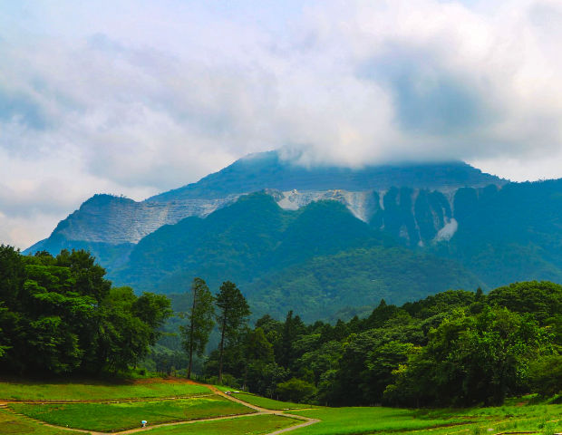
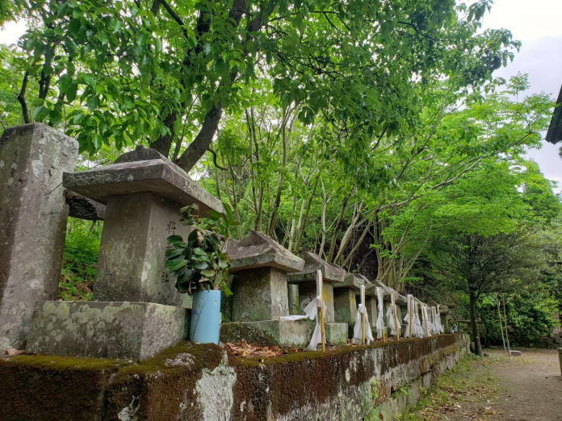
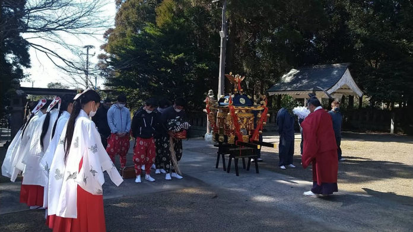
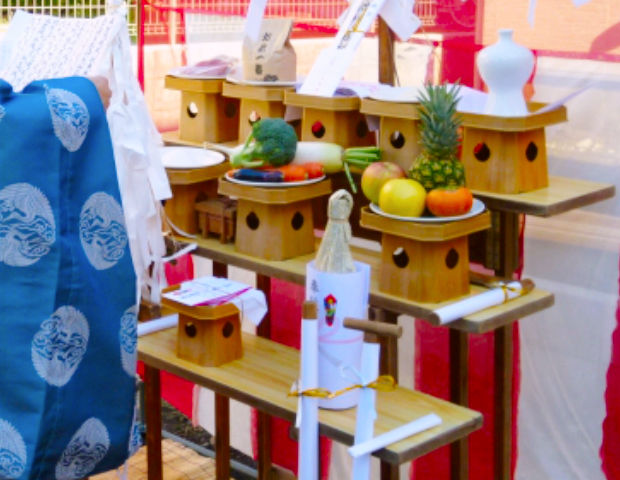

串間神社のご紹介

串間市について
宮崎県最南端の地。
宮崎市の南南西約70kmの場所にあり、東部は日向灘、南部は志布志湾に面しています。
海岸沿いは日南海岸国定公園に指定されていて、幸島や都井岬といった観光地があります。

御祭神と御由緒
13柱の神様について
主祭神の彦火火出見尊（ひこほほでみのみこと）は山幸彦とも呼ばれています。
明治5年（1872年）十三所大明神から串間神社に改称されました。

年間の祭り
串間神社の恒例行事とお祀り
2月19日、2月20日に五穀豊穣を祈願し執り行われる神事「ねたろう祭」をはじめ、当社では年間を通して様々な神事と催事を行っております。
授与品
お守り・お札など
お札、お守りなどの授与は通信頒布（お電話、LINE、郵送での受付）にて承っております。
詳しくは詳細ページをご参照ください。

御祈祷
御祈願（お祓い）について
お子様の安産祈願、お宮参り、七五三参りや神前結婚式などの人生儀礼、開運厄除や商売繁昌など個人のお願い事の祈願祭を随時承っております。
事前にご予約頂けますと円滑なご案内が可能です。

事例
出張祭典事例のご紹介
串間神社にご依頼頂いた御祈願祭や出張祭典の事例をご紹介致します。
新居の地鎮祭や会社の事務所開所祝のお祓いなど。